Starfall — (Team Lead) 3.4M/LA 3D Action-Shooter. Held weekly meetings, managed Agile Scrum pipeline. Programmed AI, combat and movement systems, designed enviro/phenomenal abilities and weapons, created 3D art and materials, coded music-reactive shaders. Worked closely with, and facilitated communication across, artisans to ensure project goals were met.
BenjaminLock
Game Programmer & Designer
Systems, worlds, and the strange machines that make them feel alive. A selection of work in 3D action, handheld experimentation, and atmospheric horror.
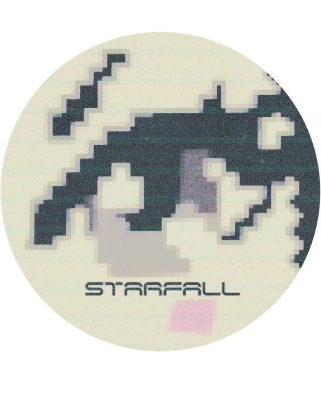
Benjamin Lock
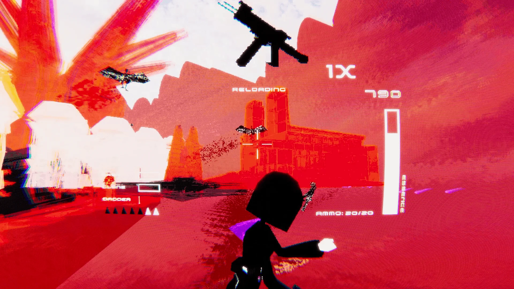
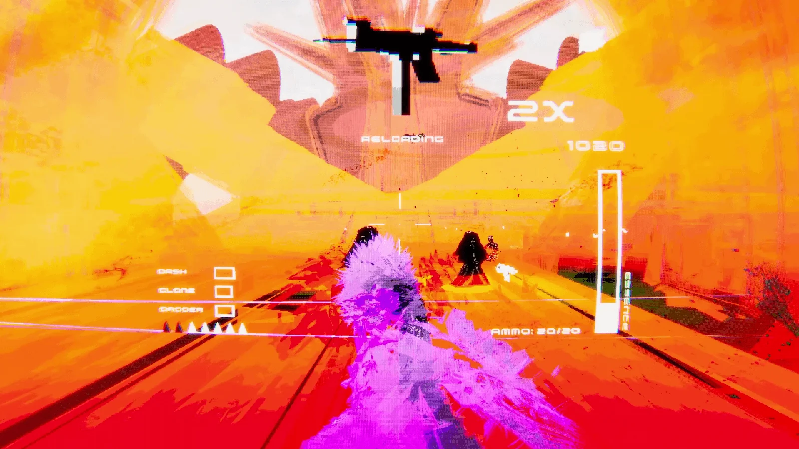
Benjamin Lock & Nicklaus Loo
Erin O’Connor
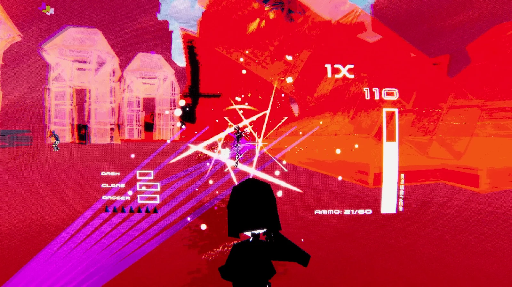
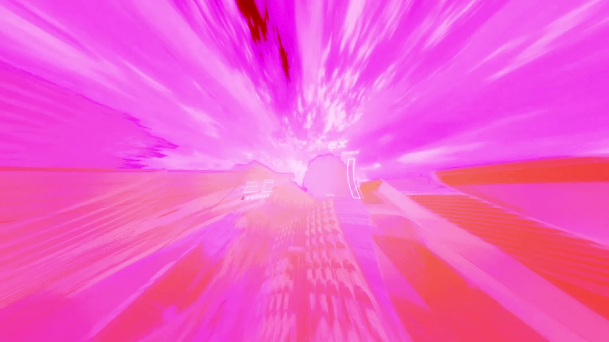
Vermillion
Hearts
design and writing by:
Benjamin Lock
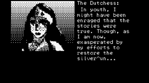
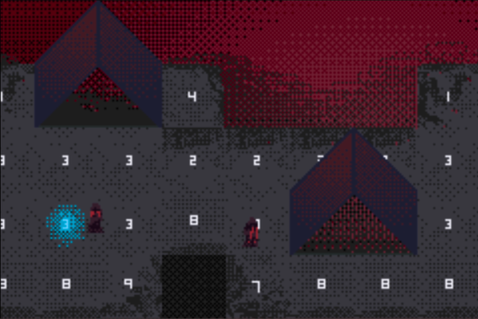
Vermillion Hearts — (Sole Responsibility) A C-based Game Boy Advance RPG created as a final project for my Media Device Architecture course. Leveraged custom GBA tools and hardware to create authentic graphical and auditory glitch-driven mechanics to give life to a disintegrating, abandoned fantasy RPG world, along with programming and designing a conversation system, a series of player abilities, and the puzzles that they serve to solve.
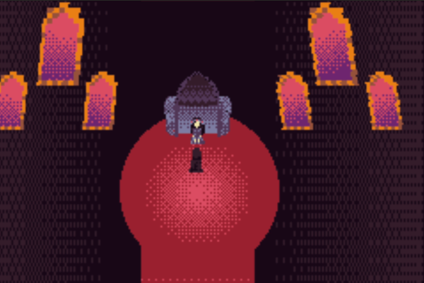
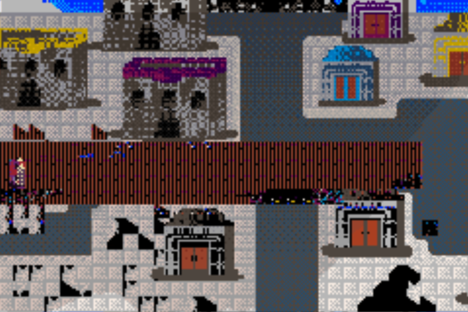
Star is
Gone
Benjamin Lock
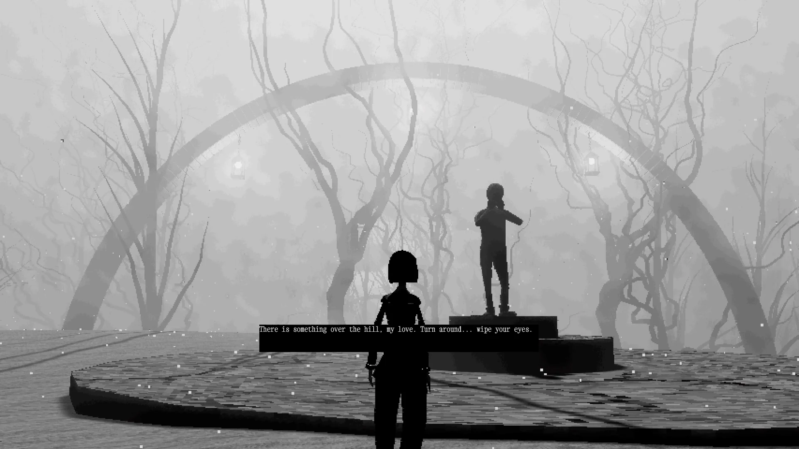
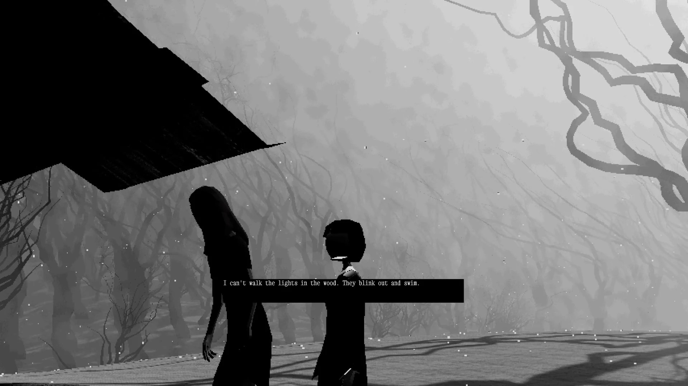
Benjamin Lock
The player explores a dreamlike shadow of the waking world known only as ‘The Within Place’. Scripted events, enemy AI, a dialogue system, and an open-ended design rule unite to create a compelling, charming exercise in minimalism and eerie dread.
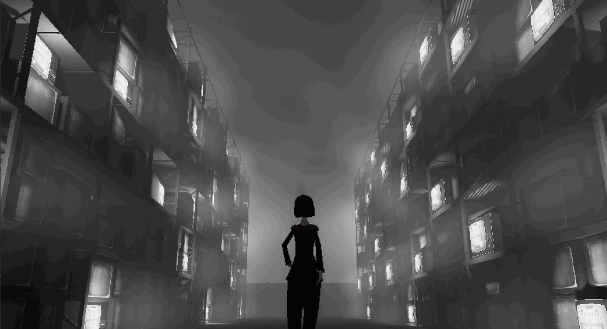
About
My name’s Ben, and I am a Game Designer and Programmer. I’m a Georgia Tech alumnus with a Bachelor’s of Science in Computational Media, focused in Games & Media.
I’m passionate about experimental games that push the boundaries of digital aesthetics and interaction, and love working in teams to bring strong, unique visions to life. I’ve led and delivered games for Georgia Tech’s VGDEV Club, and have programmed and designed over ten games of variable scale in Unity and Unreal.
My project experiences span a diverse array of development roles, including programming, design, technical design, producing, and working as a 2D and 3D artist. I’m proficient in Unreal and Unity, along with C++, C#, Python and Java. I also have experience with Adobe Creative Suite and 3D Modeling & Animation software.
Programming Languages
- C / C++
- C#
- Python
- Java
Tools
- Unity
- Unreal Engine
- Adobe Creative Suite
- 3D Modeling & Animation
- GBA Hardware
Experience
- VGDEV Club — Georgia Tech
- Starfall — Team Lead, 2022
- Vermillion Hearts — Solo, 2021
- Star is Gone — Team Lead, 2020